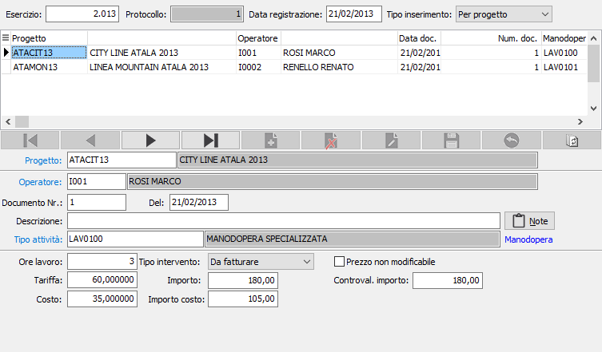

Movimenti manodopera
La fase di registrazione degli interventi costituisce una parte fondamentale della gestione progetti/commesse in quanto permette di ottenere un duplice risultato: registrare i movimenti progetti da fatturare sul progetto e tenere costantemente sotto controllo i costi di intervento sui vari progetti. Il programma quindi consente la registrazione consuntiva degli interventi effettuati su singoli progetti.
Accedendo al programma, viene visualizzata la seguente finestra video.

La sezione superiore contiene i dati generali della registrazione:
ESERCIZIO: esercizio del movimento, in fase di inserimento propone l’ esercizio corrente.
PROTOCOLLO: campo numerico che contiene il numero progressivo del movimento manodopera. Viene proposto in base alla tabella protocolli. E’ modificabile dall’utente.
DATA REGISTRAZIONE: data del movimento, in fase di inserimento propone la data del giorno.
TIPO INSERIMENTO: indica modo di gestire l’inserimento dei dati. In fase di inserimento propone il valore del campo “Tipo inserimento manodopera”, impostato nella configurazione del modulo. Valori ammessi: per progetto, per operatore.
La sezione sottostante contiene il dettaglio dei documenti registrati:
PROGETTO: questo campo alfanumerico di 15 caratteri risulta il primo se si è scelto il tipo inserimento “Per progetto”. Indica il codice del progetto su cui è stato effettuato l’intervento. Sul campo sono attive le funzioni di ricerca (F9) ed accesso rapido (CTRL+W) sulla tabella progetti.
OPERATORE: questo campo alfanumerico di 15 caratteri risulta il primo se si è scelto il tipo inserimento “Per operatore”. Indica il codice dell’operatore che ha effettuato l’intervento. Sul campo sono attive le funzioni di ricerca (F9) ed accesso rapido (CTRL+W) sulla tabella stessa.
DOCUMENTO NR.: campo numerico che indica il numero del documento della manodopera.
DEL: data del documento a cui si riferiscono i dati della manodopera.
DESCRIZIONE: campo alfanumerico di 60 caratteri utilizzato per descrivere l’attiva svolta.
NOTE: bottone che abilita un ulteriore specifica di annotazioni per il rigo corrente.
MANODOPERA: campo alfanumerico di 22 caratteri che identifica l’attività svolta dall’operatore; viene proposta in automatico in base alla tabella operatori, ma può essere modificato. Sul campo sono attive le funzioni di ricerca (F9) sulla tabella Articoli limitato ai soli articoli di tipo “Manodopera”, e manutenzione (CTRL+W) sulla tabella stessa.
ATTIVITÀ DAL/AL: questi due campi sono abilitati attraverso l’opzione “Gestione date” nella configurazione del modulo. Contengono le date di inizio e di fine intervento.
ORE LAVORO: campo numerico che indica il tempo d’intervento dell’operatore sul progetto. Se si intende attivare controlli di validità sulle ore lavorate è possibile specificare in anagrafica operatori il numero di ore giornaliere lavorate.
TARIFFA: campo numerico contenente la tariffa applicata all’interno. Trattandosi di un articolo, viene proposto in base al listino prodotti, al listino speciale o al contratto applicato al cliente (come per gli articoli in gestione documenti).
IMPORTO: è l’importo del movimento calcolato in base al numero di ore lavorate e alla tariffa.
COSTO: campo numerico contenente il costo dell’operatore. Può essere proposto in base al listino costi previsto per la manodopera e definito nel campo “Listino costi manodopera” della configurazione modulo.
IMPORTO COSTO: indica il costo complessivo dell’intervento.
Se gestita l'opzione in configurazione progetti saranno presenti gli sconti relativi sia all'importo per la tariffa che per il costo e saranno utilizzati se presenti, gli sconti legati al cliente.
TIPO MOVIMENTO: combo box che indica il tipo di movimento inserito. Valori ammessi: intervento da fatturare, sotto contratto di manutenzione.
PREZZO NON MODIFICABILE: definisce se il prezzo è un prezzo imposto, casella con segno di spunta.